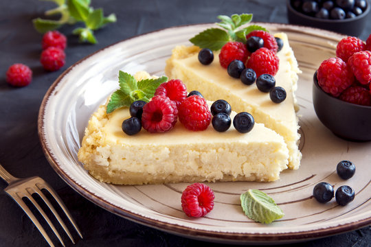

Cheesecake is a rich and creamy dessert made with a smooth filling of cream cheese, sugar, and eggs on top of a buttery crust. The filling has a soft, velvety texture with a slightly tangy flavor that balances the sweetness. Depending on the recipe, cheesecake can be flavored with vanilla, lemon, chocolate, or fresh fruit.
A classic cheesecake is baked until the edges are set while the center remains slightly soft and creamy. Once cooled and chilled, it can be served plain or topped with fresh berries, fruit sauce, whipped cream, or other toppings. Its combination of a crisp, buttery crust and rich, creamy filling makes it a popular dessert for almost any occasion.